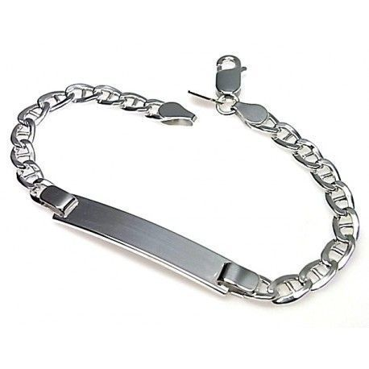

Tipos de esclavas

1Con zirconia
La zirconia, también popularmente conocida como circonita, es una piedra sintética, de origen artificial. Su principal característica es su gran similitud visual al diamante, aunque puede ser de colores variados como el rubí, el azul, el blanco o el verde esmeralda, entre otros.
2En quilates
Se usa para pesar gemas y perlas, su abreviatura es ct. Esta es la unidad de medida que se usa principalmente para definir el peso de los diamantes y equivale a 0,20 gramos. En la escala que incluimos a continuación se puede observar perfectamente cómo influye el peso de un diamante en su tamaño.